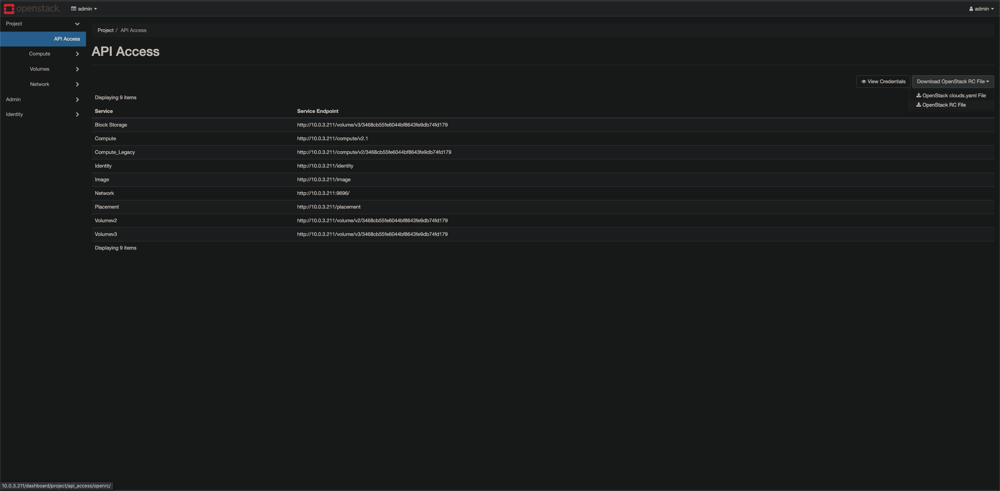

Openstack
Installing Openstack on Ubuntu
https://computingforgeeks.com/openstack-deployment-on-ubuntu-with-devstack/
# Update && Upgrade
sudo apt update -y && sudo apt upgrade -y
# Add default non-root user to Sudoers
nano /etc/sudoers
# Allow members of group sudo to execute any command
%sudo ALL=(ALL:ALL) NOPASSWD:ALL
# Download DevStack
sudo apt install git -y
cd ~ && git clone https://git.openstack.org/openstack-dev/devstack
# Create local.conf
cd devstack && nano local.conf
[[local|localrc]]
# Password for KeyStone, Database, RabbitMQ and Service
ADMIN_PASSWORD=supersecurepassword
DATABASE_PASSWORD=$ADMIN_PASSWORD
RABBIT_PASSWORD=$ADMIN_PASSWORD
SERVICE_PASSWORD=$ADMIN_PASSWORD
# Host IP - get your Server/VM IP address from ip addr command
HOST_IP=192.168.10.100
# Deploy Openstack
cd devstack
./stack.sh
Openstack CLI
Download the OpenStack RC File from the GUI:
Example OpenRC File downloaded:
#!/usr/bin/env bash
# To use an OpenStack cloud you need to authenticate against the Identity
# service named keystone, which returns a **Token** and **Service Catalog**.
# The catalog contains the endpoints for all services the user/tenant has
# access to - such as Compute, Image Service, Identity, Object Storage, Block
# Storage, and Networking (code-named nova, glance, keystone, swift,
# cinder, and neutron).
#
# *NOTE*: Using the 3 *Identity API* does not necessarily mean any other
# OpenStack API is version 3. For example, your cloud provider may implement
# Image API v1.1, Block Storage API v2, and Compute API v2.0. OS_AUTH_URL is
# only for the Identity API served through keystone.
export OS_AUTH_URL=http://10.0.3.211/identity
# With the addition of Keystone we have standardized on the term **project**
# as the entity that owns the resources.
export OS_PROJECT_ID=3468cb55fe6044bf8643fe9db74fd179
export OS_PROJECT_NAME="admin"
export OS_USER_DOMAIN_NAME="Default"
if [ -z "$OS_USER_DOMAIN_NAME" ]; then unset OS_USER_DOMAIN_NAME; fi
export OS_PROJECT_DOMAIN_ID="default"
if [ -z "$OS_PROJECT_DOMAIN_ID" ]; then unset OS_PROJECT_DOMAIN_ID; fi
# unset v2.0 items in case set
unset OS_TENANT_ID
unset OS_TENANT_NAME
# In addition to the owning entity (tenant), OpenStack stores the entity
# performing the action as the **user**.
export OS_USERNAME="admin"
# With Keystone you pass the keystone password.
#echo "Please enter your OpenStack Password for project $OS_PROJECT_NAME as user $OS_USERNAME: "
#read -sr OS_PASSWORD_INPUT
#export OS_PASSWORD=$OS_PASSWORD_INPUT
export OS_PASSWORD=password
# If your configuration has multiple regions, we set that information here.
# OS_REGION_NAME is optional and only valid in certain environments.
export OS_REGION_NAME="RegionOne"
# Don't leave a blank variable, unset it if it was empty
if [ -z "$OS_REGION_NAME" ]; then unset OS_REGION_NAME; fi
export OS_INTERFACE=public
export OS_IDENTITY_API_VERSION=3
Image
https://docs.openstack.org/python-openstackclient/pike/cli/command-objects/image.html
# Image Create
openstack image create --container-format ova --disk-format vdi --min-disk 8 --min-ram 1024 --file ~/Downloads/VirtualCanary_334d99a4.ova VirtualCanary
Flavor
https://docs.openstack.org/python-openstackclient/pike/cli/command-objects/flavor.html
openstack flavor create --id canary --ram 1024 --disk 8 --vcpus 1 canary
Server
https://docs.openstack.org/python-openstackclient/pike/cli/command-objects/server.html
# Server Create
openstack server create --image VirtualCanary --flavor ds1G --network private canary
Random Scriptjies
List all SG rules of grepped SG names:
read -p 'Enter substring of SG: ' PX
for SG in $(openstack security group list | grep $PX | awk '{print $4}')
do
echo $SG
openstack security group rule list $SG | grep -w "10."* | awk '{print $4,$6,$8}' > $PX.log
done
Text manipulation of SG list:
# Remove the |
openstack security group list | grep PX | sed 's/|//g'
# Extract the 2nd column
openstack security group list | grep PX | awk '{print $2}'
# Extract the 1st row of the 2nd column
openstack security group list | grep PX | awk 'NR==1{print $2}'
# Extract the 1st row
openstack security group list | grep PX | awk 'NR==1'
# Extract the 1st row
openstack security group list | grep PX | head -1
# Count the number of rows
openstack security group list | grep PX | wc -l
### SG Rule List
openstack security group rule list xxxxxxxx-xxxx-xxxx-xxxx-xxxxxxxxxxxx
# Add test to result
openstack security group rule list xxxxxxxx-xxxx-xxxx-xxxx-xxxxxxxxxxxx | grep -o '[0-9]\{1,3\}\.[0-9]\{1,3\}\.[0-9]\{1,3\}\.[0-9]\{1,3\}' | perl -ne 'print "test $_"'
Lookup the machine(s) from IP Address:
# List all VMs
nova list --all-tenants | grep 10.249.0
# IP Address Extractor
grep -o '[0-9]\{1,3\}\.[0-9]\{1,3\}\.[0-9]\{1,3\}\.[0-9]\{1,3\}'
openstack security group rule list PX | grep -w "10."*
Remove all text before characters:
sed 's/^.*10./10./'
Get ICMP rules:
openstack security group rule list PX | grep -w "10."* | grep -v "icmp" | awk '{print $6,"_",$4,"_",$8}' | sed 's/ //g' | sed 's/:/-/g'
Inbound rule list extract:
openstack security group rule list PX | grep -w "10."* | awk '{print $4,$6,$8}'